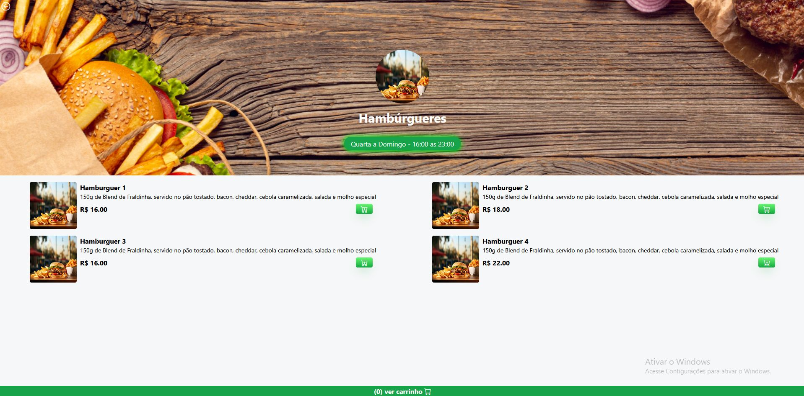
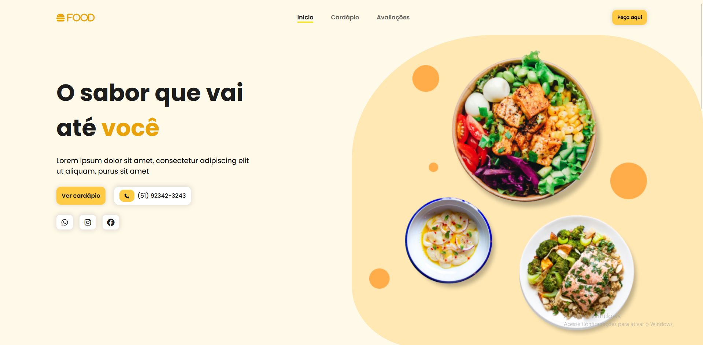

D
Davyd E. Silva
Web designer e Front-end develop
Olá, este é meu
portifólio
Sou um web designer fascinado por UX design, crio experiências digitais inovadoras e funcionais utilizando elementos 3d e aimações.
Alguns de meus projetos


Meus conhecimentos
Meu nome é
Davyd
Minha paixão é criar e desenvolver soluções digitais que combinam design criativo e funcionalidades práticas.